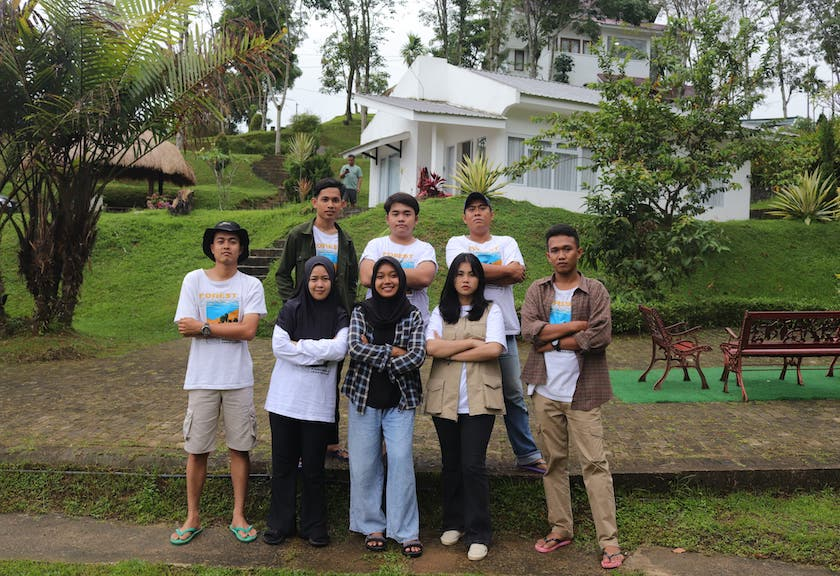
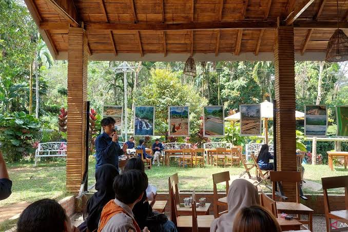
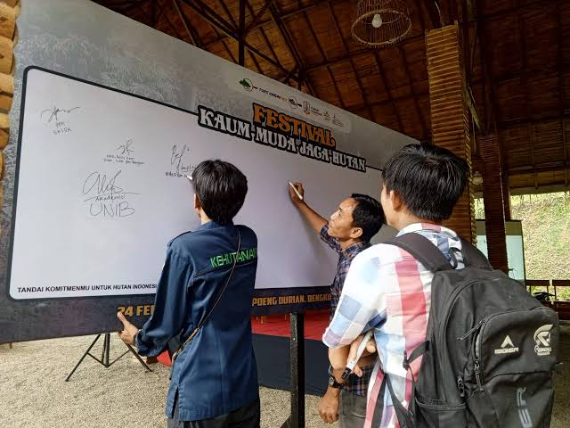
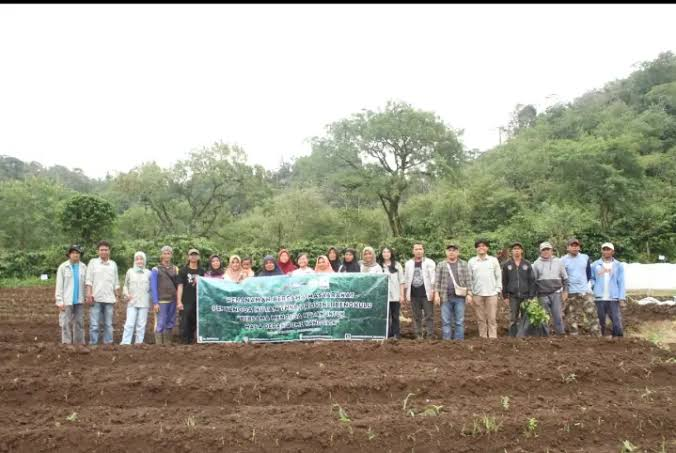
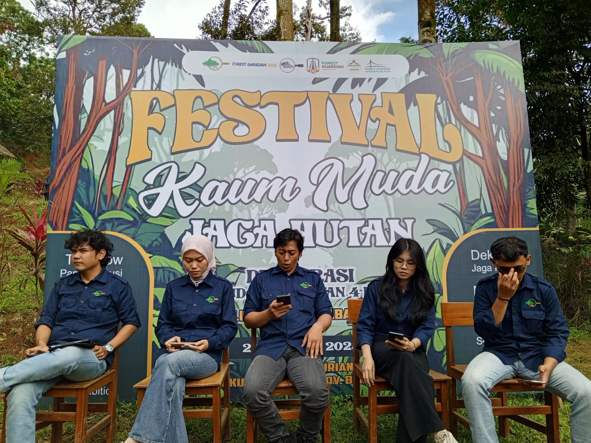

{{ post.date | date: "%d %b %Y" }}
Publikasi & Kabar Hutan
{% for post in site.posts limit:6 %}

{% endfor %}
Gerakan kolektif anak muda dalam memperjuangkan kelestarian hutan, lingkungan hidup, serta tata kelola ruang yang berkeadilan, transparan, dan berkelanjutan.
Kami adalah simpul bergerak anak muda yang gelisah atas ketidakadilan tata kelola ruang dan laju deforestasi yang mengancam masa depan.
Mewujudkan gerakan kolektif anak muda yang solid, mandiri, dan berani dalam memperjuangkan kelestarian hutan, lingkungan hidup, serta tata kelola ruang yang berkeadilan (transparan) dan berkelanjutan demi generasi masa kini dan masa depan.




